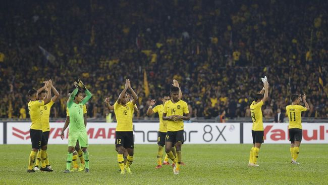

Malaysia Takluk, Singapura Beri Kekalahan Perdana Pada Kim Pan Gon
Olahraga | 20 menit yang lalu

Malaysia kalah 1-2 dari Singapura pada pertandingan uji coba di Stadion Nasional Singapura, Sabtu (26/3) malam WIB, sekaligus memberikan kekalahan perdana bagi Kim Pan Gon sebagai pelatih Harimau Malaya.
SepakBola